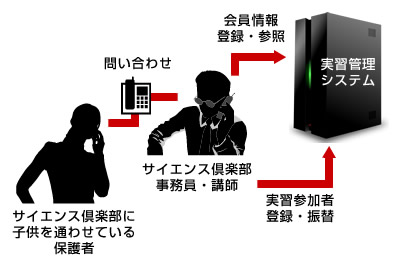

システムの概要
価値創造契約の月額課金モデルでシステムを利用いただいています
今回、私たちが対象としたのは、サイエンス倶楽部様の基幹システムに相当する実習管理システムのリプレイスです。このシステムはサイエンス倶楽部の会員 (生徒) の情報や実習の参加者情報を管理しています。実際にシステムを利用するのはサイエンス倶楽部様の社員になります。

最初に以下の開発目標についてサイエンス倶楽部様と私たちのあいだで合意しました。
- 画面構成をオペレーションに即したものにし、電話対応の効率化をはかる
- 既存システムの使えない機能・使われていない機能を使える機能にし、価値の最大化をはかる
2011年1月に開発をスタートし、同年5月末に当初の予定通りシステムをリリースしました。
6月より価値創造契約の月額課金モデルでシステムを利用いただいています。
お客様の声
サイエンス倶楽部 広永様 (専務取締役) に価値創造契約を採択されるに至った経緯やアジャイル開発の感想などについてインタビューを行いました。

まずは、今回の契約形態を採択された経緯をお話しいただけますでしょうか。
リスクの少ないサービス形態と、永和さんの熱意で、タッグを組むことに決めました。
少し話が長くなりますが、永和さんに開発をお願いする前までの経緯をお話ししたいと思います。
現在弊社で使用している基幹システムは2006年から稼働していますが、開発会社との折り合いが悪く、追加開発や保守を思うように進めることができないで いました。2009年の春には先方より一方的に保守を打ち切りたいとの要望が出たため、急遽その会社と取引関係のある別の開発会社に現システムの保守と新 システムの開発を依頼することになりました。
そこで初めて耳にしたのが「アジャイル」という言葉です。
雑誌のコピーを渡されて、竜巻状のスパイラル型開発モデルを説明されたのですが、その時は、要件定義やドキュメントの作成にかかる手間を省きたいだけなのか？という印象が強く、クライアント側にメリットがあるのか半信半疑でした。
それでも予算内にこちらが望むものができるのなら、と2009年の秋にGOサインを出しましたが、年明けに、向こうの開発責任者が退職したとの報告を担当者より受けました。ひとりで業務を抱えきれず、「病気」になってしまったようです。
こちらとしても新学期からの稼働開始を見込んでいましたから、先方に間に合わせるよう要望しましたが、退職した責任者の使用していた開発言語（Ruby） を使えるスタッフが多く集められないとのことで、新しい言語（PHP）で開発をやり直すことになりました。また開発手法もアジャイルにケチがつきましたの で、オーソドックスに要件定義から積み重ねていく方式に変更しました。結果として完成予定は延び延びになり、私のイライラも頂点に達していました。
担当者の話では6月をめどに1次開発が完了するとのことでしたので、とりあえず主要機能だけでも早期に移管したいと考えていたのですが、ある日、担当者が 真っ青な顔でやってきて、「先方がこれ以上開発を進められないと言ってきている」と報告したのです。経費が見積りの数倍に達し、これ以上続けると事業が立 ち行かないとの説明でした。こちらとしてはまだ費用を一切支払っていませんでしたので実損害はこうむりませんでしたが、大きな時間と労力の損失でした。
その後、仕切り直して会社探しを行い、最後の最後で巡り合ったのが永和さんでした。2か月前にシステム担当として入社したばかりの新入社員がインターネッ トでたまたま見つけたそうです。すでに話の進んでいた会社の提案とコンペを行い、最終的に永和さんのご提案を選択しました。
これまでの苦い失敗の経験から、私は正直に申し上げてアジャイルという開発手法を未だに信用できていません。今回の開発が無事成功すれば、少し見直せると 思いますが……（笑）。永和さんを選ぶ決め手となったのは、初期費用0円、月払いの使用料、また使用開始後も利用年数によらず解約自由という、クライアン ト側としてはリスクの少ないサービス形態です。「納得のいくシステムをできるだけ長く使ってほしい」という永和さんの姿勢に熱意を感じて、私たちはタッグ を組ませていただくことに決めました。
過去にアジャイルを採用してうまくいかなかったとのことですが、なぜ今回もアジャイルを採用されたのでしょうか。何か違いはあったのでしょうか？
サービス内容に納得感と安心感があった。やってみて、アジャイルへの不信感が払拭。
私自身は今でもドキュメントをベースにして、やること、やらないことをはっきりさせてから開発に着手するやり方のほうが確実だと思っていますし、アジャイ ルに格別の優位性を感じていません。開発会社に工数の見積もりを依頼するにあたって、お互いに納得できる材料と証拠がないと、高額な費用を支払うクライア ントにとっては不安ですから。
ただ、私たちも設計やプログラムに関しては素人の集団ですので、納得できるまでにはそれなりの時間がかかるでしょう。また後になって「あれもこれも」と追加の要望や要件の修正を出したくなることもあると思います。
そういう意味で、開発開始までの着手期間が短く、開発の進捗状況を動くシステムで確認でき、要望の追加や修正を途中でも受け入れてくれるアジャイルにはメリットがあると今回わかりました。
また今回の場合は、月額35万円の使用料に見合う形で開発して頂くということが初めにはっきりしていましたから、こちらの要望がその枠内に収まることを確認した時点で、ある程度安心できる部分がありました。
経緯でご説明いただいたこれまでのいくつかの開発とは、契約の面で大きく違っていると思いますが、違いはどういったところでしょうか。
所有から使用に。データがあれば何とかなる。
出来上がったシステムの所有権が開発会社側にあり、私たちはそれをレンタルする形で使用料を支払って利用する、という契約の形はこれまでにありませんでし た。現在動いている基幹システムは、最終的に開発会社の手を離れ、私たちが買い取った形になりましたが、自社内で使用する以外に使い道はなく、よく考える と所有していることにあまり意味はありません。
永和さんのシステムでは解約時にデータしか残りませんが、逆にデータさえあれば次のシステムに移行する場合でも何とかなるだろう、という思いで割り切ることができました。
開発のご評価をお聞かせいただけますでしょうか。
安心。机上の設計よりも、実物をたたき台にして議論できる。
開発についてはシステム担当者から、デモ画面上で実際に操作しながら動きを確認できるのが安心だという声が上がっています。机上の設計で議論するよりも、実物をたたき台にしたほうが意見を出しやすいようです。